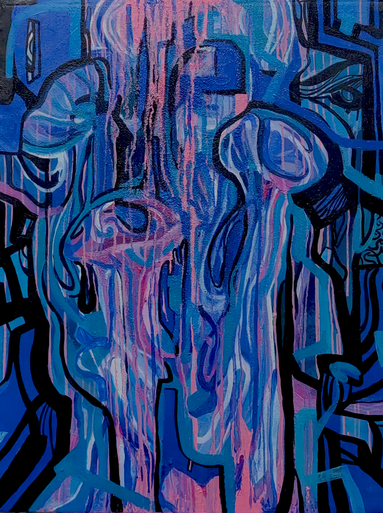
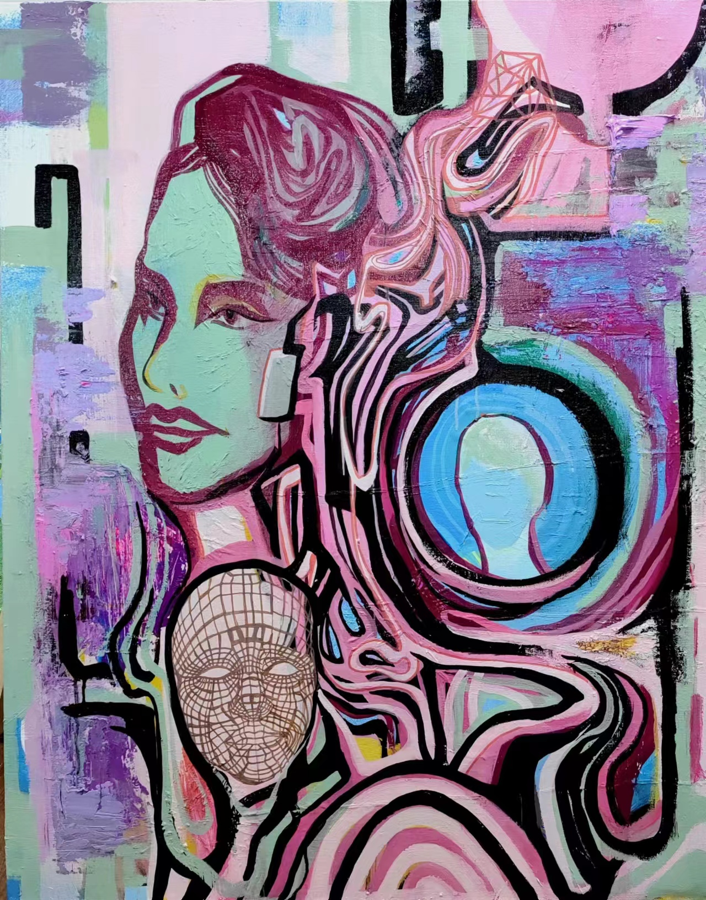
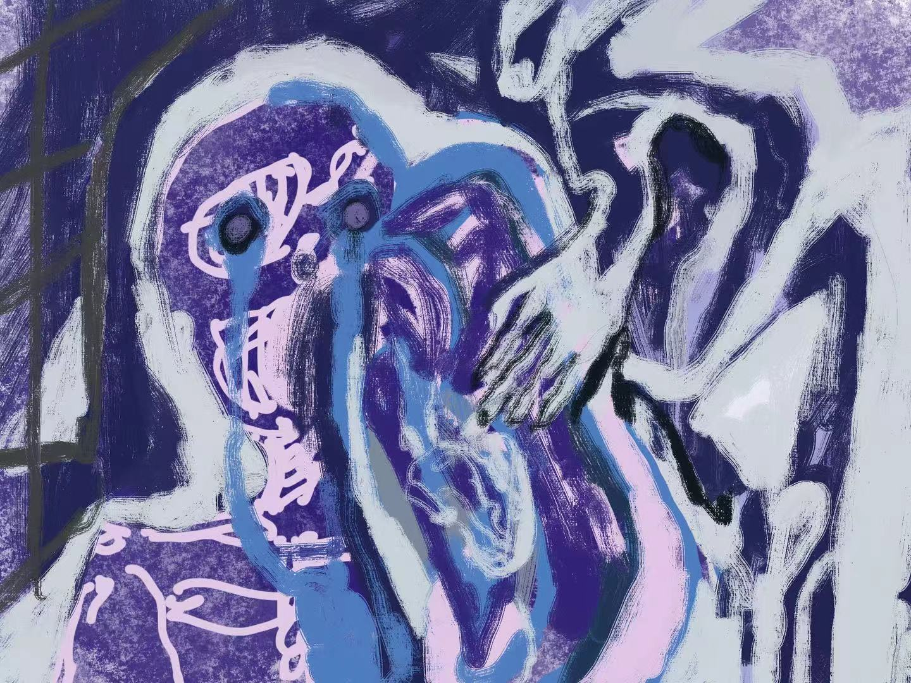

The blue and pink represent the ecological aspect of jellyfish, while the black lines symbolize the hidden network radiation and wires of electronic facilities. This suggests that our vision, whether intentionally or unintentionally, can lead us into a dream-like state with both positive and negative effects.
view more...
Mobile Spectator – Jellyfish NO.2
90×110cm 2023

Mobile Spectator NO.8
90×110cm 2023

Mobile Spectator NO.3
2022
In the "Fluxion Series 5", the evolution of vision is intricately intertwined with the shifting tides of time. From the era of video cameras to the advent of cloud-based intelligent storage, visual technology has undergone a significant transformation, marking a pivotal moment in history.
The outdated relics of my childhood, such as old TVs, videotapes, CDs, and magnetic tapes, now serve as a nostalgic reminder of my past visual experiences. Despite their rough and antiquated picture quality, they hold a valuable retrospective significance in tracing the evolution of visual media.

Vision and Times, detail

Vision and Times, detail
This series explores how seasonal environments—winter landscapes, summer forests, and urban heat—shape relationships between human bodies, memory, and ecological systems.

92×180cm 2022
//This painting explores the winter landscape of my hometown in northern China, where frozen rivers, and general drought condition and agricultural fields, human settlements coexist within a dynamic ecological system. The composition combines figurative elements—people walking in a snowy field, a snow figure, and small human silhouettes—with flowing organic forms that resemble rivers, roots. These abstract lines represent invisible ecological processes such as water circulation, soil memory, and seasonal transformation.
view more...
Summer Forest, detail

Urban Heat, detail
In the "F lux ion Ser ies 7", the visua l presentation of AI and facial recognition technology is captured through abstract lines. Visual life constructs the judgment standard of truth and falsehood through the iteration and upgrading of information and code. This work uses this to express the reflection of women's life and the "female image" shaped by reality and virtuality in the cyber world.
view more...
90×110cm 2024

Fluxion no.7, detail

Related to Psychological view connected with ambient surrounding, environment, ecological healing and reverting.
view more...
Site-specific, installation view